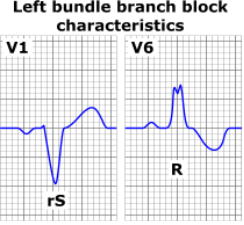
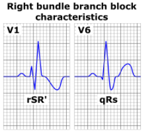

Axis
-
—Normal axis between -30° and +100°
-
—Left axis deviation -30° to -90°
-
—Right axis deviation >100°
-
—Extreme right axis -90° to 180°
Low Voltage
-
—Amplitude of entire QRS ( R+S) < 10 mm in all precordial leads (V1-V6) AND < 5 mm in all limb leads
Normal interval
-
—PR: 120 - 200 ms.
-
—QRS: 60 - 100 ms.
-
—QT corrected: ≤ 440 ms in men, ≤ 460 ms in women. QT interval should be less than 50% of the RR interval
-
QT corrected = QT / √ (R-R). QT = QTc when HR is 60 bpm.
Left Bundle Branch Block (LBBB) Criteria

-
—QRS ≥ 120 ms
-
—Delayed onset intriniscoid deflection (beginning of QRS to peak R wave > 0.05 seconds) in I, V5, V6
-
—Broad monophasic R in I, V5, V6, notched or slurred
-
—Secondary ST & T wave changes opposite in direction to major QRS (ST depression & T wave inversion in leads I, V5, V6; ST elevation & upright T wave in leads V1 and V2)
Right Bundle Branch Block (RBBB) Criteria

-
—QRS ≥ 120 ms
-
—Secondary R wave (R') in leads V1 and V2 with secondary R' usually taller than R wave (rsR' or rSR pattern)
-
—Delayed onset of intrinsicoid deflection (beginning of QRS to peak R wave > 0.05 seconds) in V1 and V2
-
—Secondary ST & T wave changes (T wave inversion; down sloping ST segment may or may not be present) in leads V1 and V2
Left Anterior Fasicular Block
-
—Left axis deviation with no other explanation for left axis
-
—qR complex in leads I and AVL
-
—rS in lead III
-
—Normal or slightly prolonged QRS duration, 80 - 100 ms
Left Posterior Fasicular Block
-
—Right axis deviation with no other explanation for right axis
-
—Normal or slightly prolonged QRS duration, 80 - 100 ms
Left Atrial Enlargement
-
—Terminal negative portion of P wave in V1 ≥1 mm deep and ≥0.04 seconds in duration (one small box deep and one small box wide), OR
-
—Notched P wave with a duration ≥ 120 ms in II, III or AVF
Right Atrial Enlargement
-
—P wave >2.5 mm tall in II, III, AVF, OR
-
—P wave >1.5 mm tall in leads V1 or V2
Left Ventricular Hypertrophy Criteria (One or more)
-
—R wave in AVL + S wave in V3 > 28 mm in males & > 20 mm in females (Cornell Criteria)
-
—R wave in V5 or V6 + S wave in V1
-
> 35 mm if age > 40 years
-
> 40 mm if age 30-40 years
-
> 60 mm if age 16-30 years
-
—R wave in AVL ≥ 12 mm
-
—R wave in lead I ≥ 14 mm
-
—S wave in AVR ≥ 15 mm
Right Ventricular Hypertrophy Criteria
-
—Right axis deviation
-
—R/S ratio in V1 > 1
-
—R wave in V1 ≥ 7 mm
-
—rSR' in V1 with R' > 10 mm